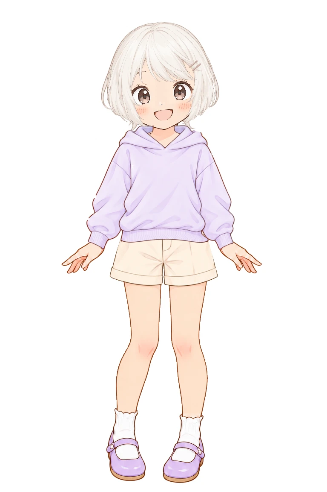
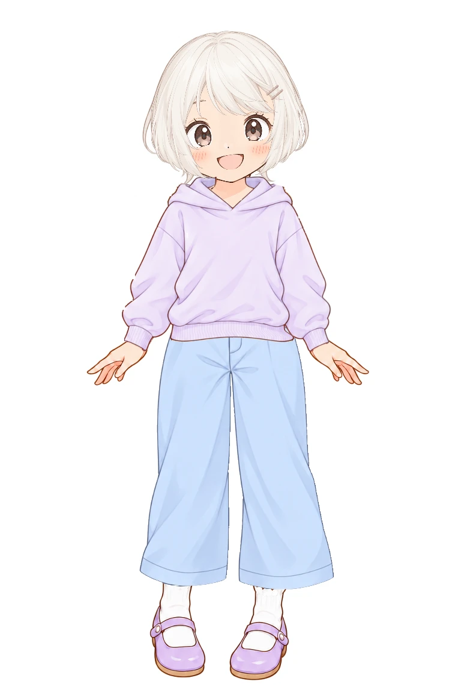
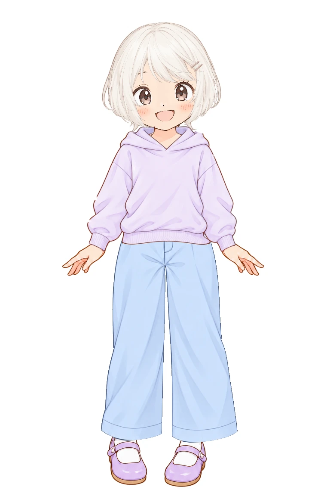
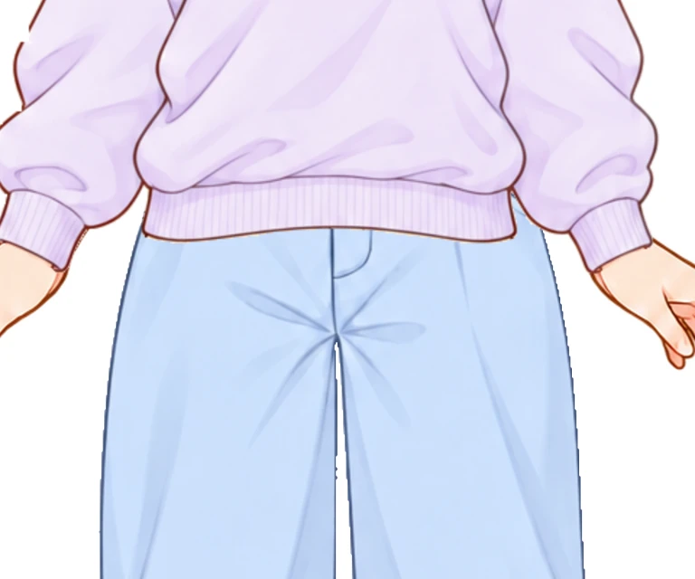
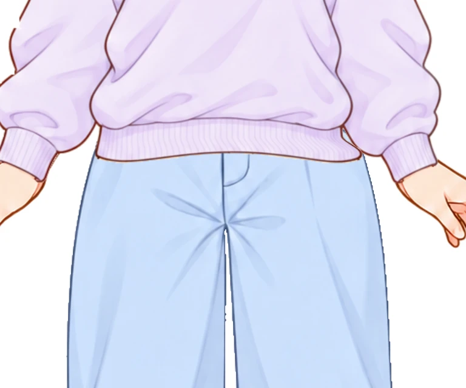

いただいた33組の調整値をそのまま反映しました。パーカーなど6種類の裾は、デザイン案の形を保ちながら体の幅に合わせています。
肩・袖・襟と、パンツ自体の画素・丈は維持しています。着せ替え本体への公開反映前の確認ページです。
位置合わせツールで再調整する今回反映した調整値を保存





このトップスは裾を変更せず、パンツの位置だけを反映しています。
調整前の比較ページ ／ 公開中の着せ替えアプリ